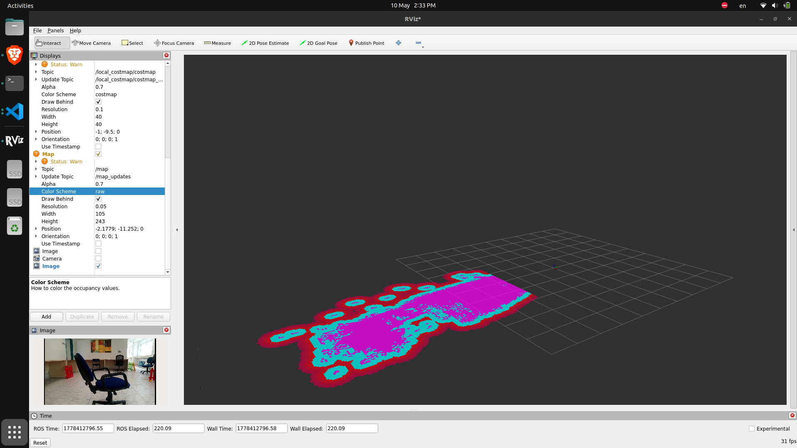
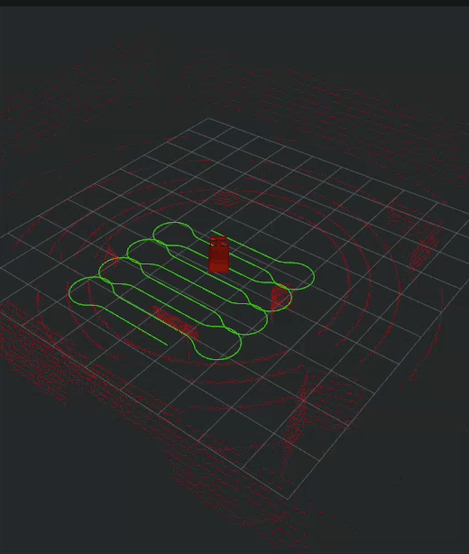
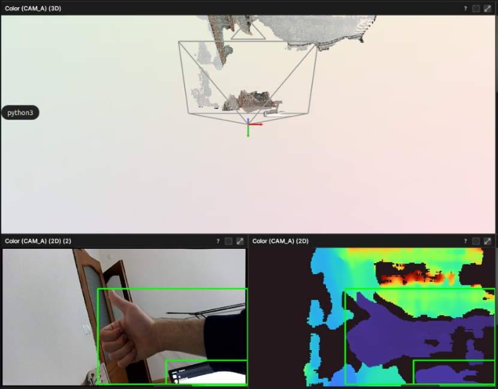
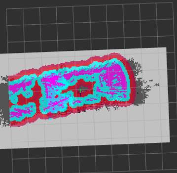
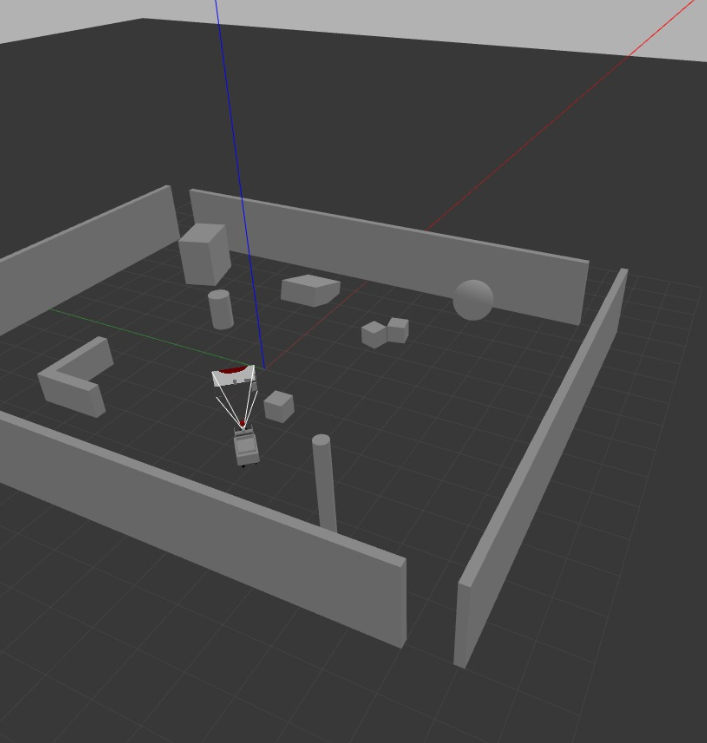

RViz Costmap
Primary View

Add assets/images/costmap-rviz-hero.png
No GPS. No pre-built maps. Just onboard mapping, costmaps, and coverage.
A physical robot that builds its understanding of a space, visualizes safe movement through costmaps, then systematically covers reachable regions.



SYSTEM OVERVIEW
Onboard sensors observe the space without GPS or prior maps.
The robot localizes itself while building a usable map from scratch.
Free space, obstacles, and inflated danger zones become visible.
Reachable regions are converted into systematic traversal paths.
Motion commands carry out the coverage plan on the real robot.
COSTMAP DEMO
Costmaps turn sensor data into a live spatial model: occupied cells, inflated obstacles, free space, and safe movement regions.
The costmap view shows how MOBOROBOT separates reachable floor from unsafe areas before coverage behavior is executed.
COVERAGE DEMO
Once MOBOROBOT understands the space, coverage planning decides where to go so reachable areas are systematically visited.
The robot works through the environment in repeatable passes, using the map and costmap constraints instead of GPS or a pre-built route.
SIMULATION TO REALITY
Gazebo and RViz are used to test mapping, costmap behavior, and coverage before physical deployment.
World models and simulated sensors expose mapping and coverage behavior before hardware tests.
Real tests verify traction, sensor placement, localization quality, and safe motion under imperfect conditions.
COSTMAP / RVIZ BREAKDOWN

Walls and occupied regions become the spatial reference for localization and planning.

Inflation zones keep the robot from planning too close to detected obstacles.
Coverage paths show which reachable regions have been systematically visited.

Gazebo scenes make it possible to repeat navigation trials before real deployment.

Real footage confirms the planner survives lighting, floor, and sensor imperfections.
ENGINEERING CHALLENGES
Map alignment can degrade during longer runs.
Tuned: loop closure checks, motion speed, sensor placement.Too much inflation blocks paths; too little creates risky plans.
Tuned: inflation radius, obstacle persistence, footprint.Real readings introduce false edges and unstable obstacle points.
Tested: filtering, update rates, mounting height.Coverage depends on stable pose estimates while the robot builds and follows its map.
Tuned: AMCL/pose parameters, startup routine, motion speed.Simulation is clean; floors, wheels, and lighting are not.
Tested: speed limits, acceleration, obstacle margins.